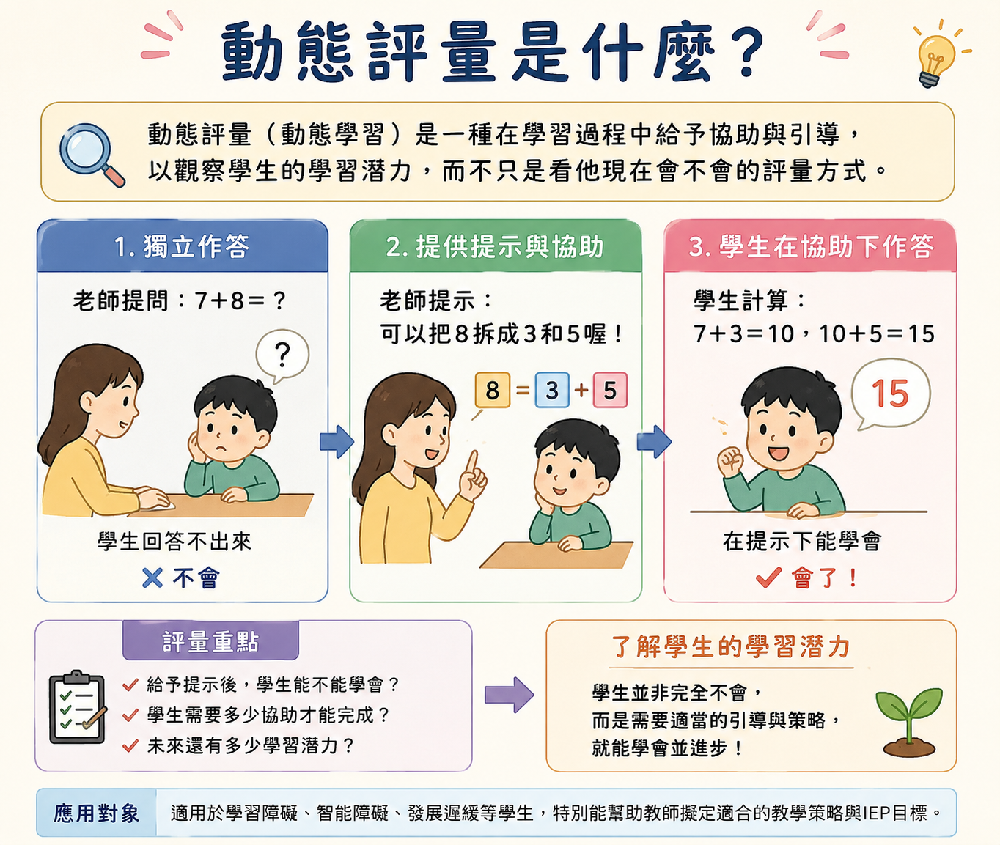

<!DOCTYPE html>
<html lang="zh-TW">
<head>
    <meta charset="UTF-8">
    <meta name="viewport" content="width=device-width, initial-scale=1.0">
    <title>線上科學閱讀理解動態評量系統 DARCS</title>
    <!-- 引入 Tailwind CSS (版面設計) -->
    <script src="https://cdn.tailwindcss.com"></script>
    <!-- 引入 React 與 ReactDOM -->
    <script crossorigin src="https://unpkg.com/react@18/umd/react.production.min.js"></script>
    <script crossorigin src="https://unpkg.com/react-dom@18/umd/react-dom.production.min.js"></script>
    <!-- 引入 Babel (用來在瀏覽器中編譯 JSX) -->
    <script src="https://unpkg.com/@babel/standalone/babel.min.js"></script>
    <style>
        /* 鎖定全螢幕，禁止上下捲動 */
        body, html { 
            margin: 0; 
            padding: 0; 
            width: 100%; 
            height: 100%; 
            overflow: hidden; 
            background-color: #f8fafc;
        }
        /* 自訂細微滾動條 (保留給單一頁面內容過多時的內部滾動) */
        ::-webkit-scrollbar { width: 6px; }
        ::-webkit-scrollbar-track { background: transparent; }
        ::-webkit-scrollbar-thumb { background: #cbd5e1; border-radius: 4px; }
        ::-webkit-scrollbar-thumb:hover { background: #94a3b8; }
    </style>
</head>
<body class="font-sans text-slate-800">
    <div id="root" class="w-full h-full"></div>

    <script type="text/babel">
        const { useState, useEffect } = React;

        // --- SVG 圖示元件庫 ---
        const Icon = ({ children, className }) => (
            <svg xmlns="http://www.w3.org/2000/svg" width="24" height="24" viewBox="0 0 24 24" fill="none" stroke="currentColor" strokeWidth="2" strokeLinecap="round" strokeLinejoin="round" className={className}>{children}</svg>
        );
        const Microscope = ({className}) => <Icon className={className}><path d="M6 18h8"/><path d="M3 22h18"/><path d="M14 22a7 7 0 1 0 0-14h-1"/><path d="M9 14h2"/><path d="M9 12a2 2 0 0 1-2-2V6h6v4a2 2 0 0 1-2 2Z"/><path d="M12 6V3a1 1 0 0 0-1-1H9a1 1 0 0 0-1 1v3"/></Icon>;
        const Calculator = ({className}) => <Icon className={className}><rect width="16" height="20" x="4" y="2" rx="2"/><line x1="8" x2="16" y1="6" y2="6"/><line x1="16" x2="16" y1="14" y2="18"/><path d="M16 10h.01"/><path d="M12 10h.01"/><path d="M8 10h.01"/><path d="M12 14h.01"/><path d="M8 14h.01"/><path d="M12 18h.01"/><path d="M8 18h.01"/></Icon>;
        const Languages = ({className}) => <Icon className={className}><path d="m5 8 6 6"/><path d="m4 14 6-6 2-3"/><path d="M2 5h12"/><path d="M7 2h1"/><path d="m22 22-5-10-5 10"/><path d="M14 18h6"/></Icon>;
        const BookOpen = ({className}) => <Icon className={className}><path d="M2 3h6a4 4 0 0 1 4 4v14a3 3 0 0 0-3-3H2z"/><path d="M22 3h-6a4 4 0 0 0-4 4v14a3 3 0 0 1 3-3h7z"/></Icon>;
        const BrainCircuit = ({className}) => <Icon className={className}><path d="M12 5a3 3 0 1 0-5.997.125 4 4 0 0 0-2.526 5.77 4 4 0 0 0 .556 6.588A4 4 0 1 0 12 18Z"/><path d="M9 13a4.5 4.5 0 0 0 3-4"/><path d="M6.003 5.125A3 3 0 0 0 6.401 6.5"/><path d="M3.477 10.896a4 4 0 0 1 .585-.396"/><path d="M6 18a4 4 0 0 1-1.968-.516"/><path d="M12 13h4"/><path d="M12 18h6a2 2 0 0 1 2 2v1"/><path d="M12 8h8"/><path d="M16 8V5a2 2 0 0 1 2-2"/><circle cx="16" cy="13" r=".5"/><circle cx="18" cy="3" r=".5"/><circle cx="20" cy="21" r=".5"/><circle cx="20" cy="8" r=".5"/></Icon>;
        const Lightbulb = ({className}) => <Icon className={className}><path d="M15 14c.2-1 .7-1.7 1.5-2.5 1-.9 1.5-2.2 1.5-3.5A6 6 0 0 0 6 8c0 1.3.5 2.6 1.5 3.5.8.8 1.3 1.5 1.5 2.5"/><path d="M9 18h6"/><path d="M10 22h4"/></Icon>;
        const LineChart = ({className}) => <Icon className={className}><path d="M3 3v18h18"/><path d="m19 9-5 5-4-4-3 3"/></Icon>;
        const PieChart = ({className}) => <Icon className={className}><path d="M21.21 15.89A10 10 0 1 1 8 2.83"/><path d="M22 12A10 10 0 0 0 12 2v10z"/></Icon>;
        const Users = ({className}) => <Icon className={className}><path d="M16 21v-2a4 4 0 0 0-4-4H6a4 4 0 0 0-4 4v2"/><circle cx="9" cy="7" r="4"/><path d="M22 21v-2a4 4 0 0 0-3-3.87"/><path d="M16 3.13a4 4 0 0 1 0 7.75"/></Icon>;
        const Database = ({className}) => <Icon className={className}><ellipse cx="12" cy="5" rx="9" ry="3"/><path d="M3 5V19A9 3 0 0 0 21 19V5"/><path d="M3 12A9 3 0 0 0 21 12"/></Icon>;
        const Target = ({className}) => <Icon className={className}><circle cx="12" cy="12" r="10"/><circle cx="12" cy="12" r="6"/><circle cx="12" cy="12" r="2"/></Icon>;
        const AlertTriangle = ({className}) => <Icon className={className}><path d="m21.73 18-8-14a2 2 0 0 0-3.48 0l-8 14A2 2 0 0 0 4 21h16a2 2 0 0 0 1.73-3Z"/><path d="M12 9v4"/><path d="M12 17h.01"/></Icon>;
        const Headphones = ({className}) => <Icon className={className}><path d="M3 18v-6a9 9 0 0 1 18 0v6"/><path d="M21 19a2 2 0 0 1-2 2h-1a2 2 0 0 1-2-2v-3a2 2 0 0 1 2-2h3zM3 19a2 2 0 0 0 2 2h1a2 2 0 0 0 2-2v-3a2 2 0 0 0-2-2H3z"/></Icon>;
        const Smartphone = ({className}) => <Icon className={className}><rect width="14" height="20" x="5" y="2" rx="2" ry="2"/><path d="M12 18h.01"/></Icon>;
        const CheckCircle2 = ({className}) => <Icon className={className}><circle cx="12" cy="12" r="10"/><path d="m9 12 2 2 4-4"/></Icon>;
        const ChevronLeft = ({className}) => <Icon className={className}><path d="m15 18-6-6 6-6"/></Icon>;
        const ChevronRight = ({className}) => <Icon className={className}><path d="m9 18 6-6-6-6"/></Icon>;

        // --- 主程式開始 ---
        function App() {
            // 控制大頁面投影片的索引 (共 6 頁：0 ~ 5)
            const [currentSlide, setCurrentSlide] = useState(0);
            const totalSlides = 6;
            
            // 控制「教學案例」頁籤的索引
            const [activeCase, setActiveCase] = useState(0);

            const cases = [
                {
                    title: '科學閱讀理解', icon: <Microscope className="w-8 h-8" />, theme: '為什麼植物需要陽光？',
                    question: '根據文章內容，植物缺少陽光時，可能會出現什麼情形？',
                    prompts: [
                        { level: '第一層：重述題意', text: '題目問的是植物缺少陽光後會發生什麼變化，請你再想想文章在問哪一件事。', analysis: '若此時答對，表示可能只是看題不清。' },
                        { level: '第二層：回到文本', text: '請回到第二段，找找看文章提到陽光和植物製造養分的關係。', analysis: '若此時答對，代表尚未掌握回到文本找線索的策略。' },
                        { level: '第三層：明示概念', text: '植物需要陽光進行光合作用，若缺少陽光，製造養分的能力會下降，因此可能生長不良。', analysis: '若此時才答對，表示對光合作用概念仍不清楚。' },
                    ]
                },
                {
                    title: '數學應用題', icon: <Calculator className="w-8 h-8" />, theme: '面積與周長計算',
                    question: '一個長方形面積是16平方公尺，長是5公尺，請問周長是多少？',
                    prompts: [
                        { level: '第一層：重述題意', text: '題目已經給你面積和長，要求的是周長。', analysis: '若此時答對，表示可能卡在題意理解。' },
                        { level: '第二層：提示步驟', text: '要求周長前，要先知道長和寬。你可以先想：面積 ÷ 長 = 什麼？', analysis: '若此時答對，代表不知道或忘記解題步驟。' },
                        { level: '第三層：明示概念', text: '長方形面積＝長×寬，所以寬＝面積÷長；求出寬後，再用（長＋寬）×2 求周長。', analysis: '若此時才答對，表示面積與周長公式混淆。' },
                    ]
                },
                {
                    title: '國語閱讀理解', icon: <Languages className="w-8 h-8" />, theme: '描寫父親辛勤工作的文章',
                    question: '作者最想表達的主旨是什麼？',
                    prompts: [
                        { level: '第一層：重述題意', text: '題目問的是整篇文章最主要想表達的意思。', analysis: '若此時答對，表示未掌握「主旨」的詞義。' },
                        { level: '第二層：閱讀策略', text: '請看看文章最後一段，通常作者會在結尾寫出感受或想法。', analysis: '若此時答對，表示未養成從關鍵段落找主旨的閱讀策略。' },
                        { level: '第三層：明示概念', text: '這篇文章透過父親工作的描寫，表達對父親辛勞與付出的感謝。', analysis: '若此時才答對，表示文章統整與歸納能力仍需補強。' },
                    ]
                }
            ];

            // 全域左右鍵監聽 (用於切換大投影片)
            useEffect(() => {
                const handleKeyDown = (e) => {
                    if (e.target.tagName === 'INPUT' || e.target.tagName === 'TEXTAREA') return;
                    
                    if (e.key === 'ArrowRight' || e.key === 'PageDown') {
                        setCurrentSlide((prev) => Math.min(prev + 1, totalSlides - 1));
                    } else if (e.key === 'ArrowLeft' || e.key === 'PageUp') {
                        setCurrentSlide((prev) => Math.max(prev - 1, 0));
                    }
                };
                window.addEventListener('keydown', handleKeyDown);
                return () => window.removeEventListener('keydown', handleKeyDown);
            }, [totalSlides]);

            // 切換投影片的輔助函式
            const goToNext = () => setCurrentSlide(p => Math.min(p + 1, totalSlides - 1));
            const goToPrev = () => setCurrentSlide(p => Math.max(p - 1, 0));

            return (
                <div className="w-screen h-screen overflow-hidden relative bg-slate-900">
                    
                    {/* 頂部操作提示 (只在第一頁顯示) */}
                    <div className={`absolute top-6 left-1/2 -translate-x-1/2 z-50 transition-opacity duration-1000 ${currentSlide === 0 ? 'opacity-100' : 'opacity-0 pointer-events-none'}`}>
                        <div className="bg-black/40 backdrop-blur-md text-white/80 px-6 py-2 rounded-full text-sm font-medium border border-white/10 flex items-center gap-2 shadow-xl">
                            <span className="animate-pulse">💡</span> 請使用鍵盤 <kbd className="px-2 py-0.5 bg-white/20 rounded mx-1">⬅️</kbd> <kbd className="px-2 py-0.5 bg-white/20 rounded mx-1">➡️</kbd> 進行翻頁報告
                        </div>
                    </div>

                    {/* 投影片滑動軌道 */}
                    <div 
                        className="flex h-full w-full transition-transform duration-700 ease-[cubic-bezier(0.25,1,0.5,1)]"
                        style={{ transform: `translateX(-${currentSlide * 100}vw)` }}
                    >
                        
                        {}
                        {/* Slide 0: 封面與成員 */}
                        <section className="w-screen h-screen shrink-0 overflow-y-auto flex flex-col justify-center bg-gradient-to-br from-blue-900 via-indigo-800 to-slate-900 text-white relative">
                            <div className="absolute top-[-10%] right-[-5%] w-[40vw] h-[40vw] rounded-full bg-blue-500/10 blur-3xl pointer-events-none"></div>
                            <div className="absolute bottom-[-10%] left-[-10%] w-[30vw] h-[30vw] rounded-full bg-indigo-500/20 blur-3xl pointer-events-none"></div>
                            
                            <div className="w-full px-6 md:px-16 2xl:px-32 grid lg:grid-cols-2 gap-16 items-center z-10 max-w-[1800px] mx-auto">
                                <div className="space-y-8">
                                    <div className="inline-block px-4 py-2 bg-blue-500/30 text-blue-200 rounded-full text-lg md:text-xl font-bold tracking-widest border border-blue-400/30 backdrop-blur-md">
                                        課程評量專題報告
                                    </div>
                                    <h1 className="text-5xl md:text-7xl 2xl:text-8xl font-black leading-tight tracking-tight">
                                        線上科學閱讀理解<br/>
                                        <span className="text-transparent bg-clip-text bg-gradient-to-r from-cyan-300 to-blue-400">動態評量系統 DARCS</span>
                                    </h1>
                                    <p className="text-xl md:text-3xl text-blue-100 font-light leading-relaxed max-w-3xl">
                                        從「評量學習結果」走向「促進學習」。看見學生在鷹架協助後的學習潛能，打造評量與教學結合的創新模式。
                                    </p>
                                    
                                    <div className="pt-8 border-t border-slate-700/50">
                                        <p className="text-slate-400 text-lg mb-4 tracking-widest">RESEARCH TEAM / 報告成員</p>
                                        <div className="flex flex-wrap items-center gap-4">
                                            {['廖苑岑', '王予芊', '林宛儀'].map((name) => (
                                                <span key={name} className="flex items-center gap-2 bg-slate-800/80 px-6 py-3 rounded-full border border-slate-600 text-xl font-medium shadow-lg hover:bg-slate-700 transition">
                                                    <Users className="w-6 h-6 text-cyan-400" />
                                                    {name}
                                                </span>
                                            ))}
                                        </div>
                                    </div>
                                </div>
                                <div className="relative rounded-3xl overflow-hidden shadow-2xl ring-4 ring-white/10 hidden lg:block transform hover:scale-[1.02] transition-transform duration-500 bg-slate-800/50 aspect-video flex items-center justify-center">
                                    {/* 替換為實際圖片 1.png */}
                                     { e.target.onerror = null; e.target.src = 'https://images.unsplash.com/photo-1503676260728-1c00da094a0b?auto=format&fit=crop&w=1200&q=80'; }} />
                                    <div className="absolute inset-0 bg-gradient-to-t from-slate-900 via-transparent to-transparent flex flex-col justify-end p-8">
                                        <p className="text-2xl font-bold text-white mb-2">結合數位科技與動態評量</p>
                                        <p className="text-blue-200 text-lg">Online Dynamic Assessment of Reading in Science</p>
                                    </div>
                                </div>
                            </div>
                        </section>

                        {}
                        {/* Slide 1: 背景與動態評量核心 */}
                        <section className="w-screen h-screen shrink-0 overflow-y-auto flex flex-col justify-center bg-slate-50 relative">
                            <div className="w-full px-6 md:px-16 2xl:px-32 max-w-[1800px] mx-auto py-12">
                                <div className="text-center mb-16">
                                    <h2 className="text-4xl md:text-6xl font-black text-slate-800 mb-6">為什麼需要動態評量？</h2>
                                    <p className="text-2xl md:text-3xl text-slate-600 max-w-5xl mx-auto">
                                        科學閱讀理解是學習基礎，但傳統評量難以掌握學生真正的困難點與潛能。
                                    </p>
                                </div>
                                
                                <div className="grid xl:grid-cols-2 gap-10">
                                    <div className="bg-white p-10 rounded-3xl border border-slate-200 shadow-xl relative overflow-hidden group hover:border-slate-300 transition">
                                        <div className="absolute top-0 right-0 w-32 h-32 bg-slate-100 rounded-bl-full -z-10 group-hover:bg-slate-200 transition"></div>
                                        <div className="w-16 h-16 bg-slate-100 text-slate-500 rounded-2xl flex items-center justify-center mb-8">
                                            <BookOpen className="w-8 h-8" />
                                        </div>
                                        <h3 className="text-3xl font-bold mb-6 text-slate-800">傳統靜態評量的限制</h3>
                                        <ul className="space-y-6 text-2xl text-slate-600">
                                            <li className="flex gap-4 items-start"><span className="text-red-400 font-bold mt-1">✕</span> <span>只看一次作答的「結果評量」。</span></li>
                                            <li className="flex gap-4 items-start"><span className="text-red-400 font-bold mt-1">✕</span> <span>知道答對或答錯，卻較難看出學生錯在哪裡。</span></li>
                                            <li className="flex gap-4 items-start"><span className="text-red-400 font-bold mt-1">✕</span> <span>無法掌握學生在獲得提示後是否具有學習潛能。</span></li>
                                        </ul>
                                    </div>

                                    <div className="bg-blue-50 p-10 rounded-3xl border border-blue-100 shadow-xl relative overflow-hidden group hover:border-blue-200 transition ring-1 ring-blue-500/20">
                                        <div className="absolute top-0 right-0 w-32 h-32 bg-blue-100 rounded-bl-full -z-10 group-hover:bg-blue-200 transition"></div>
                                        <div className="w-16 h-16 bg-blue-600 text-white rounded-2xl flex items-center justify-center mb-8 shadow-lg shadow-blue-500/40">
                                            <BrainCircuit className="w-8 h-8" />
                                        </div>
                                        <h3 className="text-3xl font-bold mb-6 text-blue-900">動態評量的核心概念 (協助式評量)</h3>
                                        <ul className="space-y-6 text-2xl text-slate-700">
                                            <li className="flex gap-4 items-start"><span className="text-blue-500 font-bold mt-1">✓</span> <span>引用 Vygotsky <strong>近側發展區 (ZPD)</strong> 概念。</span></li>
                                            <li className="flex gap-4 items-start"><span className="text-blue-500 font-bold mt-1">✓</span> <span>透過「前測 — 提示/鷹架 — 再測」觀察學習歷程。</span></li>
                                            <li className="flex gap-4 items-start"><span className="text-blue-500 font-bold mt-1">✓</span> <span>重點在於了解學生遇到困難時，<strong>需要哪一層協助</strong>，藉此判斷後續教學方向。</span></li>
                                        </ul>
                                    </div>
                                </div>
                            </div>
                        </section>

                        {}
                        {/* Slide 2: 三大架構 */}
                        <section className="w-screen h-screen shrink-0 overflow-y-auto flex flex-col justify-center bg-slate-900 text-white relative">
                            <div className="w-full px-6 md:px-16 2xl:px-32 max-w-[1800px] mx-auto py-12">
                                <div className="text-center mb-16">
                                    <h2 className="text-4xl md:text-6xl font-black mb-6">系統與研究架構分析</h2>
                                    <p className="text-2xl md:text-3xl text-slate-400 max-w-4xl mx-auto">不只是把紙本搬上電腦，而是透過科技實現動態評量的理念。</p>
                                </div>

                                <div className="grid lg:grid-cols-3 gap-10">
                                    <div className="bg-slate-800/80 border border-slate-700 p-12 rounded-3xl hover:bg-slate-800 transition shadow-2xl">
                                        <BrainCircuit className="w-16 h-16 text-cyan-400 mb-8" />
                                        <h3 className="text-3xl md:text-4xl font-bold mb-4">理論架構</h3>
                                        <p className="text-2xl text-cyan-200 mb-6 font-medium">標準化漸進提示動態評量</p>
                                        <p className="text-xl text-slate-300 leading-relaxed">
                                            採用 Campione 與 Brown 模式。在學生答錯時逐步給予協助 (重述題意 → 閱讀策略 → 明示概念)，透過「提示次數」判斷學生出現困難的層次，看見潛能。
                                        </p>
                                    </div>
                                    <div className="bg-slate-800/80 border border-slate-700 p-12 rounded-3xl hover:bg-slate-800 transition shadow-2xl">
                                        <Database className="w-16 h-16 text-blue-400 mb-8" />
                                        <h3 className="text-3xl md:text-4xl font-bold mb-4">系統架構</h3>
                                        <p className="text-2xl text-blue-200 mb-6 font-medium">數位平台＋資料庫紀錄</p>
                                        <p className="text-xl text-slate-300 leading-relaxed">
                                            採用 Web 架構與資料庫。重點在於能完整記錄學生的<strong className="text-white">解題歷程資料</strong>：答錯幾次、用了幾次提示、是否回顧文章等，提供補救教學依據。
                                        </p>
                                    </div>
                                    <div className="bg-slate-800/80 border border-slate-700 p-12 rounded-3xl hover:bg-slate-800 transition shadow-2xl">
                                        <Target className="w-16 h-16 text-indigo-400 mb-8" />
                                        <h3 className="text-3xl md:text-4xl font-bold mb-4">評量架構</h3>
                                        <p className="text-2xl text-indigo-200 mb-6 font-medium">文本＋題組＋診斷回饋</p>
                                        <p className="text-xl text-slate-300 leading-relaxed">
                                            實現<strong className="text-white">「評量即教學」</strong>。包含科學詞彙、推理、推論、主題四大面向。學生作答時同步學習，教師獲得診斷報告。
                                        </p>
                                    </div>
                                </div>
                            </div>
                        </section>

                        {}
                        {/* Slide 3: 研究方法 */}
                        <section className="w-screen h-screen shrink-0 overflow-y-auto flex flex-col justify-center bg-white relative">
                            <div className="w-full px-6 md:px-16 2xl:px-32 max-w-[1800px] mx-auto py-12">
                                <div className="mb-12">
                                    <h2 className="text-4xl md:text-6xl font-black text-slate-800 mb-6 flex items-center gap-4">
                                        <PieChart className="w-14 h-14 text-blue-600" />
                                        混合方法研究設計
                                    </h2>
                                    <p className="text-2xl md:text-3xl text-slate-600 border-l-4 border-blue-600 pl-4">採用「工具發展取向」的混合方法，兼顧大樣本的測量品質與小樣本的學習歷程探索。</p>
                                </div>
                                
                                <div className="grid xl:grid-cols-2 gap-10">
                                    <div className="bg-slate-50 p-10 md:p-14 rounded-3xl border border-slate-200 shadow-xl">
                                        <div className="w-16 h-16 bg-blue-100 text-blue-700 rounded-2xl flex items-center justify-center mb-8"><LineChart className="w-8 h-8" /></div>
                                        <h3 className="text-3xl md:text-4xl font-bold mb-6 text-slate-800">1. 量化方法：發展與驗證</h3>
                                        <div className="space-y-6 text-xl text-slate-700">
                                            <div className="bg-white p-6 rounded-2xl shadow-sm border border-slate-100">
                                                <strong className="block text-2xl text-blue-800 mb-2">📊 樣本規模</strong>
                                                <p>預試 314 人，正式施測達 <strong>480 位有效樣本</strong>。</p>
                                            </div>
                                            <div className="grid md:grid-cols-2 gap-6">
                                                <div className="bg-white p-6 rounded-2xl shadow-sm border-t-4 border-indigo-500">
                                                    <strong className="block text-xl text-slate-800 mb-2">古典測驗理論 (CTT)</strong>
                                                    <p>分析信度、效度、難度 (0.55適中) 與鑑別度 (0.45良好)。</p>
                                                </div>
                                                <div className="bg-white p-6 rounded-2xl shadow-sm border-t-4 border-cyan-500">
                                                    <strong className="block text-xl text-slate-800 mb-2">試題反應理論 (IRT)</strong>
                                                    <p>分析 a、b、c 值、測驗特徵曲線與題組反應模式 (TRT)。</p>
                                                </div>
                                            </div>
                                        </div>
                                    </div>
                                    <div className="bg-blue-50 p-10 md:p-14 rounded-3xl border border-blue-100 shadow-xl relative overflow-hidden">
                                        <div className="absolute top-0 right-0 w-64 h-64 bg-white/40 rounded-bl-full -z-10"></div>
                                        <div className="w-16 h-16 bg-blue-600 text-white rounded-2xl flex items-center justify-center mb-8 shadow-lg shadow-blue-500/40"><Users className="w-8 h-8" /></div>
                                        <h3 className="text-3xl md:text-4xl font-bold mb-6 text-slate-800">2. 質性方法：學生晤談</h3>
                                        <div className="space-y-6 text-xl text-slate-700">
                                            <div className="bg-white/80 backdrop-blur p-6 rounded-2xl shadow-sm">
                                                <strong className="block text-2xl text-blue-800 mb-2">🗣️ 樣本對象</strong>
                                                <p>訪談 <strong>18 位六年級學生</strong>，補足量化數據無法呈現的學習歷程。</p>
                                            </div>
                                            <div className="bg-white/80 backdrop-blur p-6 rounded-2xl shadow-sm">
                                                <strong className="block text-2xl text-blue-800 mb-4">重點探索面向</strong>
                                                <ul className="grid grid-cols-2 gap-6 text-lg">
                                                    <li className="flex items-center gap-3"><CheckCircle2 className="text-green-500 shrink-0 w-6 h-6"/> 紙本與數位偏好</li>
                                                    <li className="flex items-center gap-3"><CheckCircle2 className="text-green-500 shrink-0 w-6 h-6"/> 語音導讀成效</li>
                                                    <li className="flex items-center gap-3"><CheckCircle2 className="text-green-500 shrink-0 w-6 h-6"/> 提示設計清晰度</li>
                                                    <li className="flex items-center gap-3"><CheckCircle2 className="text-green-500 shrink-0 w-6 h-6"/> 解決困難策略</li>
                                                </ul>
                                            </div>
                                        </div>
                                    </div>
                                </div>
                            </div>
                        </section>

                        {}
                        {/* Slide 4: 六大結果 */}
                        <section className="w-screen h-screen shrink-0 overflow-y-auto flex flex-col justify-center bg-slate-50 relative">
                            <div className="w-full px-6 md:px-16 2xl:px-32 max-w-[1800px] mx-auto py-12">
                                <div className="text-center mb-16">
                                    <h2 className="text-4xl md:text-6xl font-black text-slate-800 mb-6">六大核心研究結果摘要</h2>
                                    <p className="text-2xl md:text-3xl text-slate-500">透過量化數據與質性訪談，驗證了 DARCS 系統的成效與價值。</p>
                                </div>

                                <div className="grid md:grid-cols-2 lg:grid-cols-3 gap-10">
                                    <div className="bg-white border border-slate-200 p-10 rounded-3xl shadow-lg hover:shadow-xl transition">
                                        <div className="w-16 h-16 bg-green-100 text-green-600 rounded-full flex items-center justify-center mb-6"><CheckCircle2 className="w-8 h-8"/></div>
                                        <h3 className="text-3xl font-bold mb-4 text-slate-800">1. 具備良好信效度</h3>
                                        <p className="text-xl text-slate-600 leading-relaxed">整體內部一致性極佳 (Cronbach α=0.84~0.85)。與外在效標具顯著相關，能有效測量能力。</p>
                                    </div>
                                    <div className="bg-white border border-slate-200 p-10 rounded-3xl shadow-lg hover:shadow-xl transition">
                                        <div className="w-16 h-16 bg-blue-100 text-blue-600 rounded-full flex items-center justify-center mb-6"><Target className="w-8 h-8"/></div>
                                        <h3 className="text-3xl font-bold mb-4 text-slate-800">2. 難度鑑別度適中</h3>
                                        <p className="text-xl text-slate-600 leading-relaxed">平均鑑別度 0.45、難度 0.55。系統對中高程度測量最準確；低程度則依賴提示功能作為鷹架。</p>
                                    </div>
                                    <div className="bg-white border border-slate-200 p-10 rounded-3xl shadow-lg hover:shadow-xl transition">
                                        <div className="w-16 h-16 bg-purple-100 text-purple-600 rounded-full flex items-center justify-center mb-6"><Smartphone className="w-8 h-8"/></div>
                                        <h3 className="text-3xl font-bold mb-4 text-slate-800">3. 數位閱讀吸引興趣</h3>
                                        <p className="text-xl text-slate-600 leading-relaxed">過半學生偏好數位閱讀。但仍有部分學生重視紙本的自主翻閱度與視覺舒適度，兩者無法完全取代。</p>
                                    </div>
                                    <div className="bg-white border border-slate-200 p-10 rounded-3xl shadow-lg hover:shadow-xl transition">
                                        <div className="w-16 h-16 bg-yellow-100 text-yellow-600 rounded-full flex items-center justify-center mb-6"><Headphones className="w-8 h-8"/></div>
                                        <h3 className="text-3xl font-bold mb-4 text-slate-800">4. 語音導讀有助專注</h3>
                                        <p className="text-xl text-slate-600 leading-relaxed">高達 15/18 學生肯定有聲閱讀，能協助識字、增加印象並避免跳讀。但不可調速可能限制深度思考。</p>
                                    </div>
                                    <div className="bg-white border border-slate-200 p-10 rounded-3xl shadow-lg hover:shadow-xl transition">
                                        <div className="w-16 h-16 bg-orange-100 text-orange-600 rounded-full flex items-center justify-center mb-6"><Lightbulb className="w-8 h-8"/></div>
                                        <h3 className="text-3xl font-bold mb-4 text-slate-800">5. 提示作為學習鷹架</h3>
                                        <p className="text-xl text-slate-600 leading-relaxed">核心價值：提示設計能為中低程度學生提供作答鷹架，給予修正理解的機會，實踐形成性評量。</p>
                                    </div>
                                    <div className="bg-white border border-slate-200 p-10 rounded-3xl shadow-lg hover:shadow-xl transition">
                                        <div className="w-16 h-16 bg-cyan-100 text-cyan-600 rounded-full flex items-center justify-center mb-6"><BookOpen className="w-8 h-8"/></div>
                                        <h3 className="text-3xl font-bold mb-4 text-slate-800">6. 解題的常用策略</h3>
                                        <p className="text-xl text-slate-600 leading-relaxed">學生遇到困難最常使用「回顧文本」與「刪除法」。是否回顧文本與先備知識及閱讀興趣高度相關。</p>
                                    </div>
                                </div>
                            </div>
                        </section>

                        {}
                        {/* Slide 5: 實際案例 */}
                        <section className="w-screen h-screen shrink-0 overflow-y-auto flex flex-col justify-center bg-slate-900 relative">
                             <div className="w-full px-6 md:px-16 2xl:px-32 max-w-[1600px] mx-auto py-12">
                                <div className="text-center mb-12">
                                    <h2 className="text-4xl md:text-6xl font-black text-white mb-6">漸進提示：實際教學案例展示</h2>
                                    <p className="text-2xl text-slate-400 max-w-4xl mx-auto">
                                        請點擊下方按鈕，切換不同科目的動態評量情境。
                                    </p>
                                </div>

                                <div className="bg-white rounded-[2.5rem] shadow-2xl border border-slate-700 overflow-hidden flex flex-col h-full max-h-[70vh]">
                                    <div className="flex flex-wrap bg-slate-100 border-b border-slate-200 p-4 justify-center gap-4 shrink-0">
                                        {cases.map((c, idx) => (
                                            <button
                                                key={idx}
                                                onClick={() => setActiveCase(idx)}
                                                className={`flex items-center gap-3 px-8 py-4 rounded-2xl text-2xl font-bold transition-all ${
                                                    activeCase === idx 
                                                    ? 'bg-blue-600 text-white shadow-lg shadow-blue-500/40 scale-105' 
                                                    : 'bg-white text-slate-500 hover:bg-slate-200 hover:text-slate-800 border border-slate-300'
                                                }`}
                                            >
                                                {c.icon} {c.title}
                                            </button>
                                        ))}
                                    </div>

                                    <div className="p-10 md:p-14 overflow-y-auto grow bg-slate-50">
                                        <div className="mb-10 pb-8 border-b-2 border-slate-200">
                                            <span className="text-blue-600 text-xl font-bold tracking-widest mb-4 block">【文本主題】 {cases[activeCase].theme}</span>
                                            <div className="bg-white p-8 rounded-2xl border-l-8 border-blue-600 shadow-sm">
                                                <span className="text-slate-500 text-xl block mb-2 font-medium">題目：</span>
                                                <p className="text-3xl md:text-4xl font-bold text-slate-800 leading-relaxed">{cases[activeCase].question}</p>
                                            </div>
                                        </div>

                                        <h4 className="text-3xl font-bold mb-8 flex items-center gap-3 text-slate-800">
                                            <Lightbulb className="w-10 h-10 text-orange-500" />
                                            學生答錯後的三階段漸進提示：
                                        </h4>

                                        <div className="space-y-6">
                                            {cases[activeCase].prompts.map((prompt, idx) => {
                                                const colors = [
                                                    { bg: 'bg-slate-100', text: 'text-slate-700', badge: 'bg-slate-700', border: 'border-slate-200' },
                                                    { bg: 'bg-orange-50', text: 'text-orange-900', badge: 'bg-orange-600', border: 'border-orange-200' },
                                                    { bg: 'bg-red-50', text: 'text-red-900', badge: 'bg-red-600', border: 'border-red-200' }
                                                ];
                                                const c = colors[idx];

                                                return (
                                                    <div key={idx} className={`flex flex-col xl:flex-row gap-6 p-8 rounded-3xl border ${c.border} ${c.bg}`}>
                                                        <div className="xl:w-1/4 shrink-0 flex items-center">
                                                            <span className={`inline-block px-6 py-3 rounded-xl text-white font-bold text-xl ${c.badge}`}>
                                                                {prompt.level}
                                                            </span>
                                                        </div>
                                                        <div className="xl:w-2/4 flex items-center">
                                                            <p className={`text-2xl md:text-3xl font-medium leading-relaxed ${c.text}`}>「{prompt.text}」</p>
                                                        </div>
                                                        <div className="xl:w-1/4 bg-white/80 backdrop-blur p-6 rounded-2xl shadow-sm border border-white">
                                                            <p className="text-xl font-bold text-blue-800 mb-2">🎯 診斷分析</p>
                                                            <p className="text-xl text-slate-700">{prompt.analysis}</p>
                                                        </div>
                                                    </div>
                                                );
                                            })}
                                        </div>
                                    </div>
                                </div>
                            </div>
                        </section>

                        {}
                        {/* Slide 6: 整體評析與頁尾 */}
                        <section className="w-screen h-screen shrink-0 overflow-y-auto flex flex-col bg-slate-900 text-white relative">
                            <div className="flex-grow flex flex-col justify-center px-6 md:px-16 2xl:px-32 max-w-[1800px] mx-auto py-12 w-full">
                                <div className="grid xl:grid-cols-2 gap-16 items-center">
                                    <div>
                                        <h2 className="text-4xl md:text-6xl font-black mb-8">整體評析與教學啟示</h2>
                                        <p className="text-3xl text-blue-200 leading-relaxed mb-8 border-l-4 border-blue-500 pl-6">
                                            這篇研究成功結合了「科學閱讀理解」、「動態評量」、「數位學習」與「測驗理論」。
                                        </p>
                                        <p className="text-2xl text-slate-300 leading-relaxed mb-8">
                                            它不只看學生最後答對幾題，更蒐集了提示次數、閱讀時間、回顧次數等歷程資料，使 DARCS 兼具<strong>「診斷」與「教學」</strong>雙重功能。這提供了一個完整的系統發展範例，非常適合現場教師應用於補救教學的設計參考。
                                        </p>
                                    </div>
                                    
                                    <div className="bg-slate-800 p-12 rounded-3xl border border-slate-700 shadow-2xl relative overflow-hidden">
                                        <AlertTriangle className="absolute top-[-20px] right-[-20px] w-48 h-48 text-slate-700/30 -z-0" />
                                        <h3 className="text-4xl font-bold mb-10 text-white relative z-10 flex items-center gap-4">
                                            <AlertTriangle className="w-10 h-10 text-yellow-500" />
                                            研究限制與未來展望
                                        </h3>
                                        <ul className="space-y-8 relative z-10 text-2xl text-slate-300">
                                            <li className="flex gap-6 items-start">
                                                <div className="w-10 h-10 rounded-full bg-slate-700 flex items-center justify-center shrink-0 font-bold mt-1">1</div>
                                                <p><strong>質性樣本限制：</strong>對數位介面的看法主要來自單一學校 18 位學生，不宜過度推論。</p>
                                            </li>
                                            <li className="flex gap-6 items-start">
                                                <div className="w-10 h-10 rounded-full bg-slate-700 flex items-center justify-center shrink-0 font-bold mt-1">2</div>
                                                <p><strong>缺乏對照組：</strong>證實學生認為提示有幫助，但尚未進行「有/無提示組」的成效差異比較。</p>
                                            </li>
                                            <li className="flex gap-6 items-start">
                                                <div className="w-10 h-10 rounded-full bg-slate-700 flex items-center justify-center shrink-0 font-bold mt-1">3</div>
                                                <p><strong>技術更新需求：</strong>原系統使用 Flash 開發，若要重回教學現場，需以 HTML5 現代技術重建。</p>
                                            </li>
                                        </ul>
                                    </div>
                                </div>
                            </div>
                            
                            <footer className="w-full bg-black py-8 text-center text-slate-500 shrink-0">
                                <p className="text-xl">課程評量專題報告 | 報告成員：廖苑岑、王予芊、林宛儀</p>
                            </footer>
                        </section>

                    </div>

                    {}
                    {/* 簡報 UI 導覽按鈕 (左右箭頭) */}
                    <button 
                        onClick={goToPrev}
                        disabled={currentSlide === 0}
                        className={`absolute left-4 top-1/2 -translate-y-1/2 w-16 h-16 flex items-center justify-center rounded-full bg-black/20 hover:bg-black/50 text-white backdrop-blur-sm transition-all z-50 ${currentSlide === 0 ? 'opacity-0 pointer-events-none' : 'opacity-100 hover:scale-110'}`}
                    >
                        <ChevronLeft className="w-10 h-10" />
                    </button>
                    
                    <button 
                        onClick={goToNext}
                        disabled={currentSlide === totalSlides - 1}
                        className={`absolute right-4 top-1/2 -translate-y-1/2 w-16 h-16 flex items-center justify-center rounded-full bg-black/20 hover:bg-black/50 text-white backdrop-blur-sm transition-all z-50 ${currentSlide === totalSlides - 1 ? 'opacity-0 pointer-events-none' : 'opacity-100 hover:scale-110'}`}
                    >
                        <ChevronRight className="w-10 h-10" />
                    </button>

                    {/* 底部進度指示器 (Dots) */}
                    <div className="absolute bottom-6 left-0 right-0 flex justify-center gap-3 z-50">
                        {Array.from({ length: totalSlides }).map((_, idx) => (
                            <button
                                key={idx}
                                onClick={() => setCurrentSlide(idx)}
                                className={`h-3 rounded-full transition-all duration-300 ${
                                    currentSlide === idx 
                                    ? 'w-10 bg-blue-500' 
                                    : 'w-3 bg-slate-400/50 hover:bg-slate-300'
                                }`}
                                aria-label={`Go to slide ${idx + 1}`}
                            />
                        ))}
                    </div>

                </div>
            );
        }

        // --- 啟動 React 應用程式 ---
        const root = ReactDOM.createRoot(document.getElementById('root'));
        root.render(<App />);
    </script>
</body>
</html>
